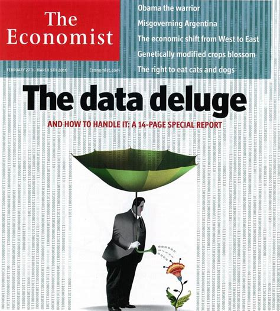

Dati e strumenti per MSP
e il ruolo delle scienze marine e marittime
I dati sono fondamentali per MSP
Molti temi ambientali ed economici e molte interconnessioni
Diverse scale temporali e spaziali
Processo complesso, variabile e adattabile
Di quali dati ha bisogno MSP?
Siamo inondati di dati

... ma i dati possono essere
- non adatti per lo scopo
- non aggiornati
- irrilevanti
- scarsamente documentati
- non ufficiali/validati
- a volte i dati di qualità, dettagliati e aggiornati sono difficili da trovare
Categorizzazione di usi antropici e informazioni ambientali
... e priorità!
Dove si trovano i dati per MSP?
Portali, database, cataloghi
- Istituzionali
- EC, EEA, portali MSP nazionali
- Enti, NGOs, iniziative
- EMODnet, Atlas of the Sea, WWF, FAO, ...
- Progetti di ricerca
- SHAPE, ADRIPLAN, PORTODIMARE
- Privati/Business(?)
ADRIPLAN, SUPREME, PORTODIMARE
- Visione e investimento di medio/lungo termine
- Interazione tra autorità nazionali/regionali e la comunità scientifica
- Collaborazioni internazionali
Come descriviamo e comprendiamo i dati?
Metadati
- importanza: comprensione del contenuto, approfondimenti, attribuzione
- criticità: scarsa attenzione/qualità, aggiornamento
Cosa si può fare con i dati?
Accesso (aperto?)
Permessi
Licenze
Come si usano i dati?
strumenti
- per cercare, visualizzare, scaricare
- portali, cataloghi
- per interazione, participazione, pianificazione
- MSP Game, Sea Sketch...
- per integrazione, analisi
- Tools4MSP, moduli integrati in PORTODIMARE
Tools4MSP Geoplatform
PORTODIMARE
Scienza e ricerca per MSP
Perché è importante?
- interdisciplinarietà dell'ambiente marino
- comprensione e gestione dell'incertezza
- complessità degli usi marittimi
- avanzamenti scientifici e tecnologici
- guidizio esperto a supporto delle decisioni
Come gestire e aggiornare i dati in modo efficiente?
- selezione di dati prioritari da gestire per MSP
- dati ufficiali/validati gestiti da enti preposti
- condivisione aperta con strumenti e servizi interoperabili
- flusso di aggiornamento condiviso e integrato cross-ente/border/...
- portali di aggregazione e strumenti di lavoro/analisi
Dati e strumenti per MSP e il ruolo delle scienze marine e marittime
by Alessandro Sarrettais licensed under a Creative Commons Attribution 4.0 International License.

It can be viewed online here and downloaded here.
To cite this work please refer to:
"Alessandro Sarretta (2016). Dati e strumenti per MSP e il ruolo delle scienze marine e marittime. DOI: